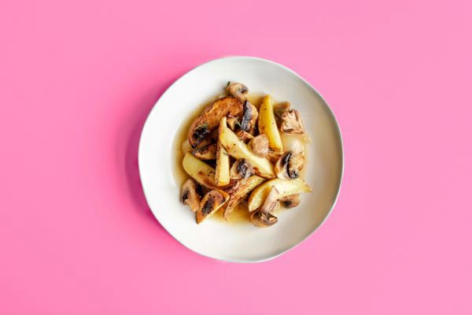

Ce oferim
Paste
Diverse sortimente de sushi
Deserturi diverse pentru toate gusturile
Eleganță în farfurie

Hamburgers
Băuturi și cocktail-uri

Restaurantul nostru oferă o experiență culinară de neuitat, combinând rețete tradiționale cu preparate inovative, pregătite cu ingrediente proaspete și de calitate superioară. Atmosfera elegantă și serviciul impecabil creează un cadru perfect pentru orice ocazie specială sau o simplă seară de relaxare.
Moza este mai mult decât un restaurant – este un loc unde tradiția întâlnește inovația, iar fiecare masă devine o poveste. Fondat în urmă cu 30 ani din dorința de a aduce un nou suflu în peisajul culinar al Cluj, Moza a început ca o mică afacere de familie, bazată pe respectul pentru ingrediente de calitate și dragostea pentru mâncarea autentică.
„Am avut o experiență minunată la Moza! Atmosfera este deosebită, iar mâncarea este absolut delicioasă. Am încercat mai multe feluri de mâncare și fiecare a fost perfect gătit. Personalul este foarte prietenos și atent la detalii. Cu siguranță voi reveni!!”
„Un loc perfect pentru o cină în oraș! Restaurantul Moza are un design modern, iar serviciile sunt impecabile. Am fost impresionați de calitatea ingredientelor și de preparatele rafinate. Un loc ideal pentru o seară de neuitat!”
„Recomand cu drag restaurantul Moza! Am avut o masă de neuitat, cu preparate delicioase și o atmosferă relaxantă. Am apreciat foarte mult varietatea meniului și atenția personalului. Fiecare vizită este o experiență culinară excepțională.”
„Restaurantul Moza este locul perfect pentru a petrece momente de neuitat alături de cei dragi. Mâncarea este delicioasă și gătită cu multă atenție la detalii, iar atmosfera este extrem de plăcută. Personalul este amabil și foarte profesionist. Abia aștept să revin!”
„Am venit la Moza pentru o cină romantică și totul a fost perfect! Mâncarea a fost excepțională, iar vinul ales de somelier s-a potrivit de minune cu preparatele. Întregul personal a făcut ca această seară să fie deosebită. Voi reveni cu siguranță!”
„Am avut o cină de excepție la Moza! De la aperitive la desert, totul a fost absolut delicios. Meniul diversificat și preparatele atent gătite te fac să te simți cu adevărat special. Recomand cu toată încrederea acest restaurant celor care vor să se răsfețe cu o masă rafinată într-un decor elegant.”
Atmosfera de la Moza reflectă perfect filosofia noastră: un loc elegant, dar primitor, unde te simți ca acasă. Designul restaurantului combină elemente moderne cu accente tradiționale, iar iluminatul și decorul sunt gândite pentru a crea un cadru perfect pentru o experiență culinară de neuitat. La Moza, considerăm că atmosfera este la fel de importantă ca mâncarea, deoarece o experiență culinară completă nu se rezumă doar la gust, ci și la contextul în care se desfășoară.